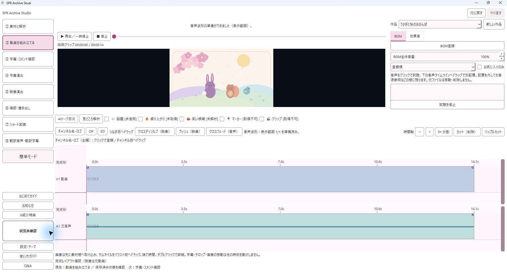
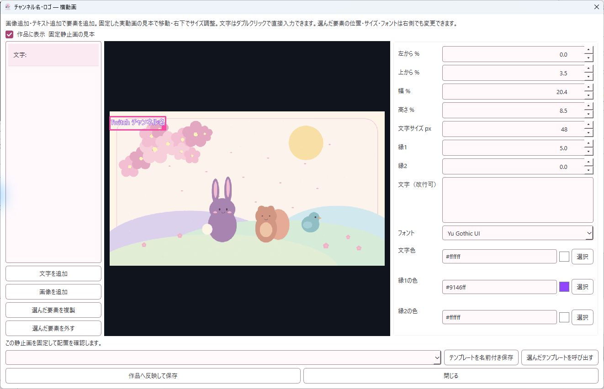
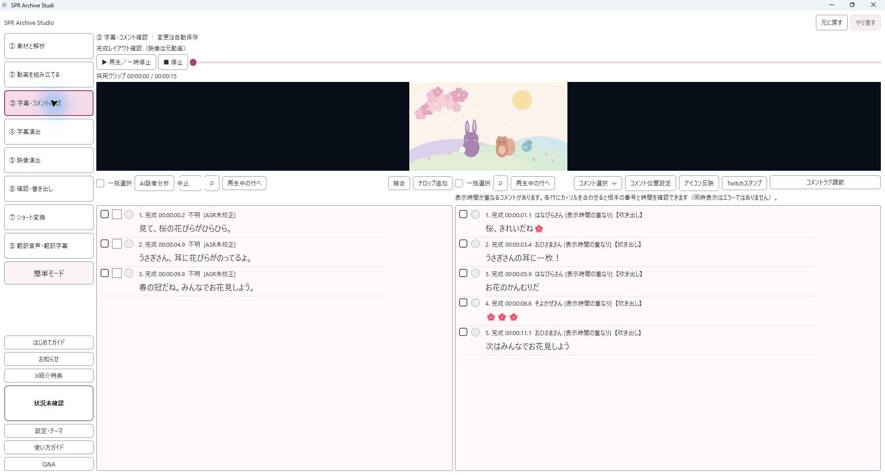
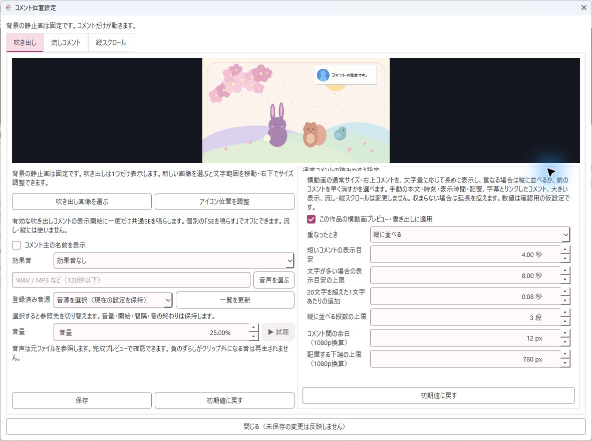
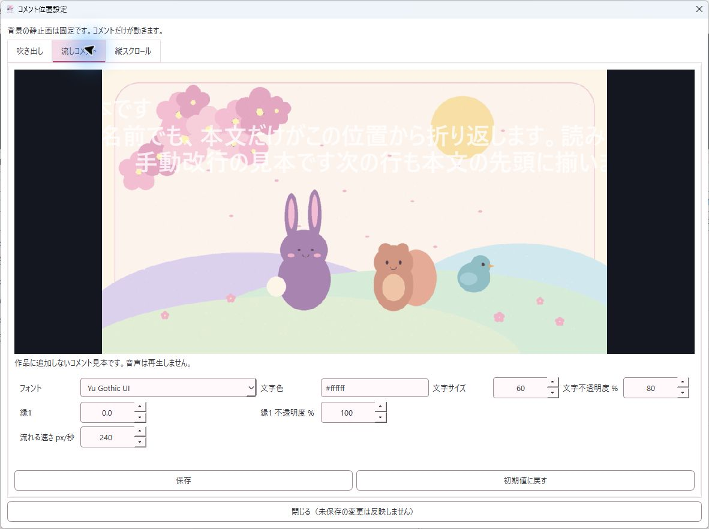
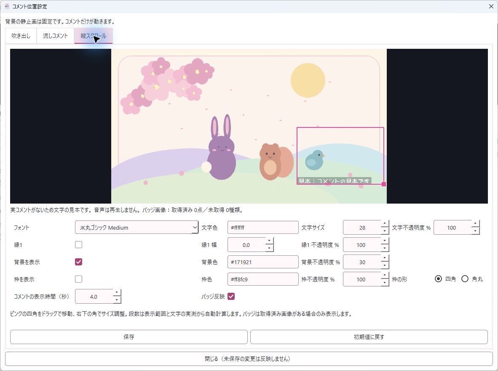
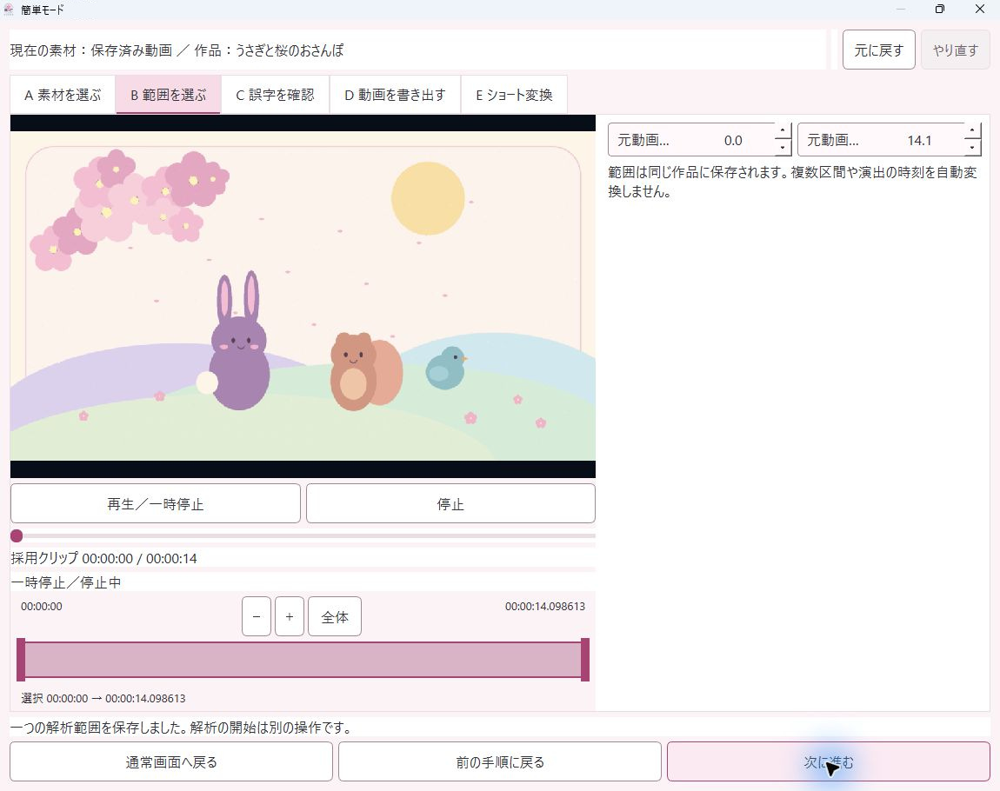
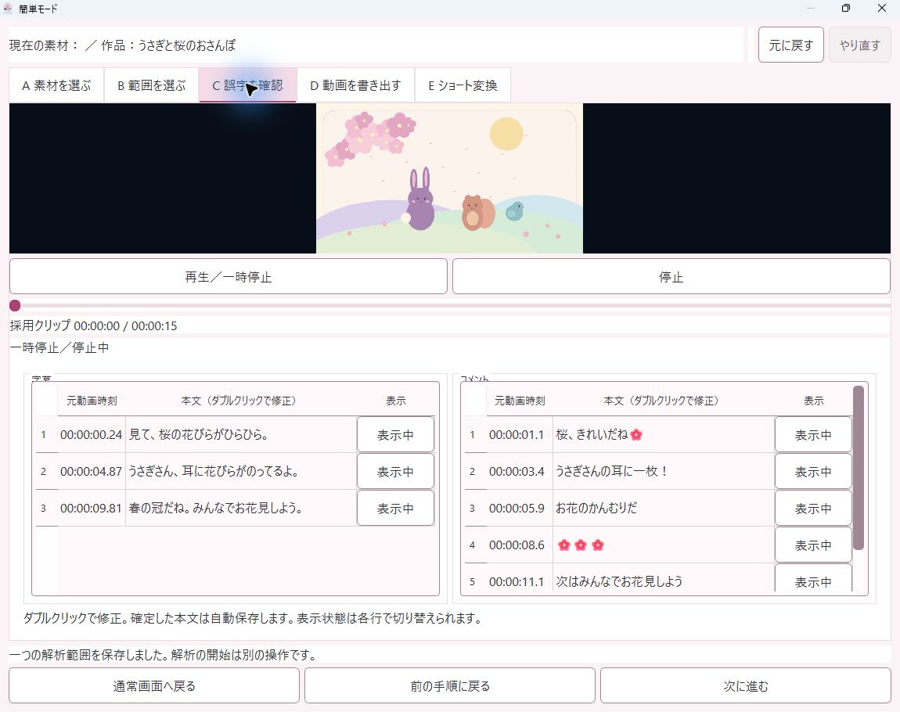

①〜⑧、簡単モード、共通設定の説明です。実画面で外観を確認した項目と、コード上の存在のみ確認した項目を分けて掲載しています。すべての操作・出力の合格を示すものではありません。
① 素材と解析
配信やPC内の動画を開き、使う範囲を選びます。
Twitchアーカイブ
連携しているチャンネルのアーカイブ一覧から素材を選びます。読み込めるのは自分の配信、または許可を得てガイドラインに沿って使える素材です。
PCの動画ファイルを取り込む
手元のファイルから素材を開きます。作品を開く操作と素材を選ぶ操作は別です。
プロジェクト一覧
保存した作品の一覧を開き、続けたい作品を選びます。
範囲を追加
タイムラインに解析候補の範囲を追加します。
選択範囲を削除
解析候補のうち選んだ範囲を一覧から外します。元の動画ファイルを削除する操作ではありません。
解析範囲
タイムラインで解析に使う範囲を指定します。Twitchから保存する動画の範囲と解析範囲は区別してください。
選択範囲をGPU解析 / 再開
①で選んだ素材と範囲から解析を始めます。必要な準備を確認し、エラー時は案内に従います。
まとめて準備
①で決めた素材と範囲をそのまま使います。対象の処理を確認して開始し、進行中は今の処理と進捗を確認できます。
この工程の新しい最終画面写真は確認待ちです。既存の仮イメージは残しています。
Twitchアーカイブ ＞ 次の10件
Twitchアーカイブ ＞ 前の10件
② 動画を組み立てる
残す場面を選び、つなぎや音を整えます。
再生／一時停止・停止
残した場面を再生してつなぎを確認します。時間軸の「−」「＋」で、見渡す時間の長さを変えられます。
分割
切りたい位置を決めて「分割」。タイムラインの右クリックからも選べます。元ファイルを切る操作ではありません。
カット（削除）・リップルカット
通常のカットは後ろを詰めず、リップルカットは後ろを詰めます。長さを縮めた後に残る末尾の「空白（黒画面）」も確認します。
クロスディゾルブ（映像）・プッシュ（映像）・クロスフェード（音声）
つなぎ目に映像や音の切り替えを置きます。タイムラインのマークで適用の有無を確認します。
BGM・効果音
右側で音源を登録・試聴し、タイムライン上の位置と音量を決めます。
チャンネル名・ロゴ／OP／ED
横動画の表示や素材を設定します。ショート用のロゴ位置は⑦で別に見直せます。
AIトーク目次
小見出し・大見出しを選ぶと右側に根拠が表示されます。ダブルクリックで見出しを編集できます。
GPT補助
「GPTになげる文章をコピー」で、対象範囲の字幕・コメントと指示文・返答形式をまとめてコピーします。内容を見直してから必要なものだけChatGPTに貼り付けます。「GPTコピーを読み込む」に返答を戻すときは、指定された形式や参照IDを変えないでください。
見どころ解析
盛り上がり、笑い候補、マーカー、クリップ、話題を確認します。チャンネルや素材によって取得できない種類があります。

残す場面をタイムラインで確認します。右クリックの「分割」で映像と原音を一緒に分けた例です。元ファイルは変更しません。

横動画用の表示をショートと分けて調整します。③ 字幕・コメント確認
文字と話者を整え、コメントをどう載せるか決めます。
字幕・コメントのダブルクリック
本文とタイミングを修正します。非表示は元のデータを削除する操作ではありません。
話者・AI話者分析
AIの振り分けは声を試聴して確認します。同じ人ならまとめ、分からない字幕は白のまま手動で見直せます。
アイコン表示
話者のアイコンを選択・解除します。字幕に使うアイコンの拡大は一括で切り替え、未設定のときは使いません。
テロップ追加
字幕側にテロップを追加します。文字スタイルは④で整えます。
コメントと字幕のリンク
リンクするコメントの ● から、対象字幕の枠を指定します。通常の本文編集とは別の操作です。
コメントラグ調節
数値を変えながら再生し、コメントのタイミングを確認します。確認したら「決定」を押します。
Twitchスタンプ・アイコン反映
取得した画像を一覧から確認。アイコンは一括選択してから不要なものだけ外せます。
BOT除外
選んだアカウントのコメントを非表示にします。一覧で対象を確認し、必要なら「除外を解除」で戻します。
コメント位置設定 ＞ 吹き出し
画像、文字・丸いアイコンの位置、名前表示、読みやすさを調整します。登録したSEは音量の横で試聴し、鳴らさないコメントだけ個別にオフにします。
吹き出し画像を選ぶ
プレビューに出す吹き出し画像を選びます。見本で文字やアイコンの収まりを確認します。
アイコン位置を調整
吹き出し画像上で、コメント主のアイコンを置く位置を調整します。
コメント主の名前を表示
吹き出しにコメント主の名前を出すか選びます。
音声を選ぶ・▶ 試聴
吹き出しに使う音を選び、試聴で確かめます。個別に鳴らしたくないコメントは、そのコメントの設定でオフにできます。
保存・初期値に戻す・閉じる
変更を使うには「保存」。標準の調整値に戻すには「初期値に戻す」。「閉じる（未保存の変更は反映しません）」では保存しなかった変更は残りません。
コメント位置設定 ＞ 流し
範囲、フォント・文字色・縁・サイズ・速度を調整します。サンプルで流れる範囲を確認します。
コメント位置設定 ＞ 縦スクロール
プレビュー上で範囲を決め、文字・縁・背景・枠・表示時間を調整します。「バッジ表示」はオンが初期値です。アーカイブに情報がない場合や未取得の場合は表示できません。

字幕とコメントを並べて確認し、見せ方を整えます。
吹き出しの位置や見た目、効果音、読みやすさを見本で確認します。
文字と速度、表示する範囲を調整します。
文字と背景、表示する範囲を見本で確認します。⑥ 確認・書き出し
完成プレビューを見て、保存先とファイル名を確認します。
書き出し
動画を保存します。編集中の軽いプレビューと書き出し画質は別です。
用途
完成動画をどこで使うかに合わせて出力形式を選びます。
画質
編集中の表示とは別に、保存する動画の画質を選びます。
エンコーダー
動画を圧縮する処理方法を選びます。
字幕を映像へ焼き込む
字幕を映像の一部として出力します。見る側がオン・オフする字幕ファイルとは別です。
SRT・WebVTTも保存
動画とは別に、字幕ファイルも保存します。
字幕ファイルだけ保存
動画を書き出さず、字幕ファイルだけを保存します。
音声だけ別々に保存
動画ではなく音声を別々のファイルとして保存するための項目です。
コメントを透過素材で保存
あとから他の映像に重ねられるコメント素材の保存項目です。
DaVinci Resolveへ渡す
編集を続ける場合の受け渡し用の項目です。
進捗・中止
書き出し中の進捗は⑥で確認します。停止するときは書き出し中の画面の操作を使います。
この工程の新しい最終画面写真は確認待ちです。既存の仮イメージは残しています。
簡単モード
通常画面と同じ流れを、必要な操作に絞って進みます。
素材を選ぶ
タイムラインで素材の範囲を一つ選び、操作を終えたときに確定。解析は右下の解析開始で始めます。
範囲を選ぶ
ひとつ前の手順で選んだ範囲全体が最初から選択済みです。必要ならそこから一区間に絞り、ドラッグを終えると確定します。
誤字を確認
再生・字幕・コメントが同じタイミングで進みます。ダブルクリックで修正。非表示も選べ、修正は都度保存します。
元に戻す・やり直す／通常画面へ戻る・前の手順に戻る・次に進む
操作名を確認して元に戻すかやり直します。手順を移動する操作は、一番下のボタンです。
書き出す・ショート変換
プレビューと保存先を確認して開始します。先回りできる準備は手が空いたときに進み、字幕編集中は入力が優先されます。
ショートのプレビューを準備
画面の見本を確認するための準備です。準備済みのときはそのまま再生できます。
再生／一時停止
縦動画の見本を見ながら、表示したい位置を探します。
UI見本: Shorts
縦画面の要素の置き方を確認する見本です。
左右の中心／上下の中心／幅／高さ
選択中の要素の位置と表示範囲を数字で調整します。

残したい一区間をドラッグで選び、操作を終えると確定します。
字幕とコメントを再生しながら見直します。位置と幅・高さの数値を確認します。書き出しの完了を示す画像ではありません。